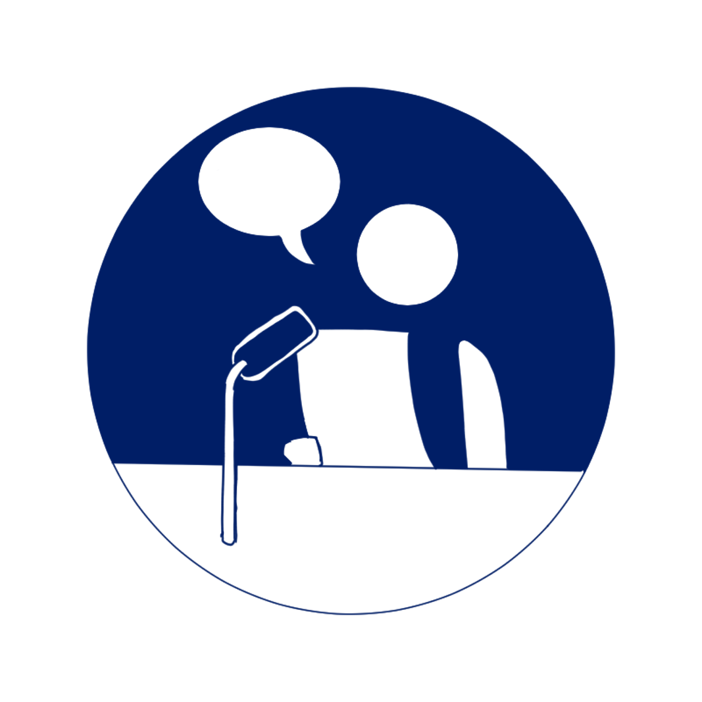
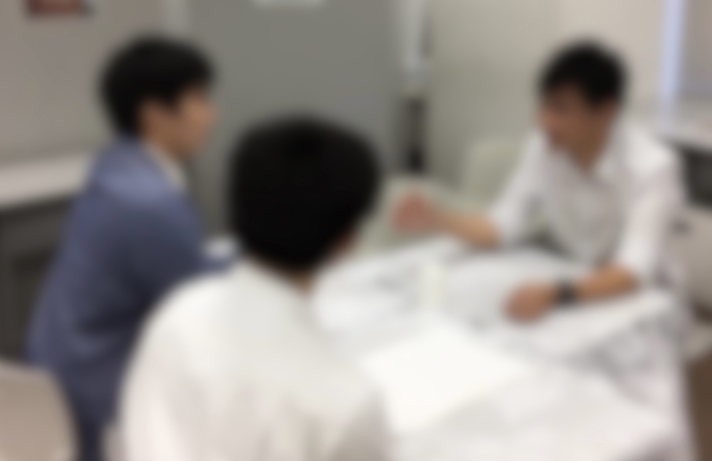
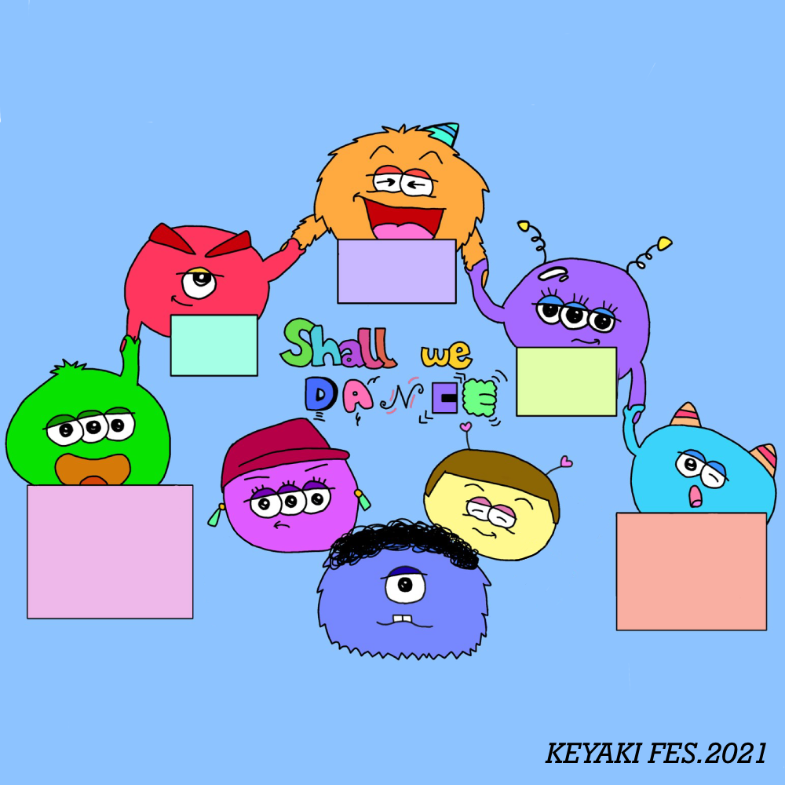
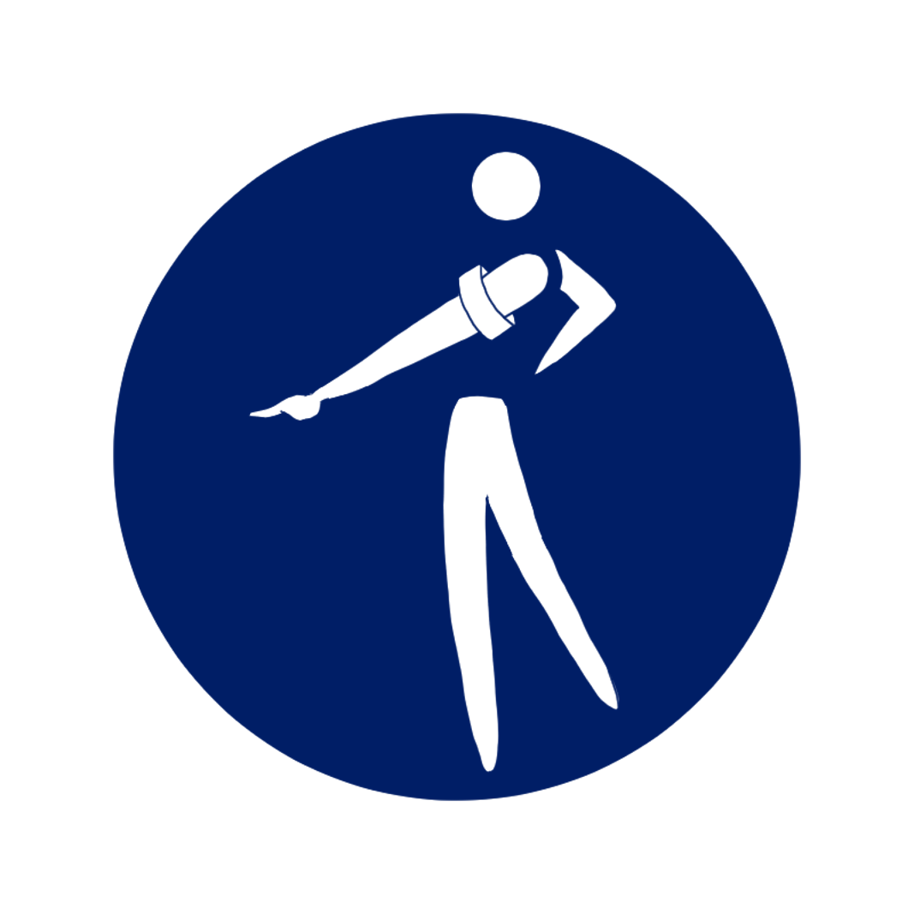
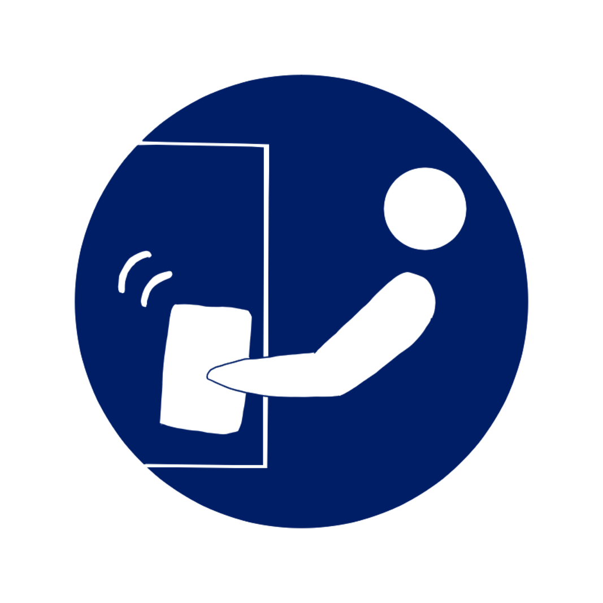
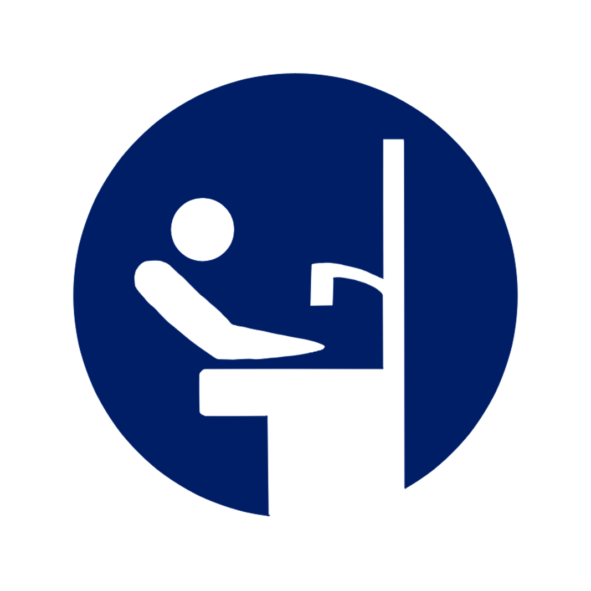
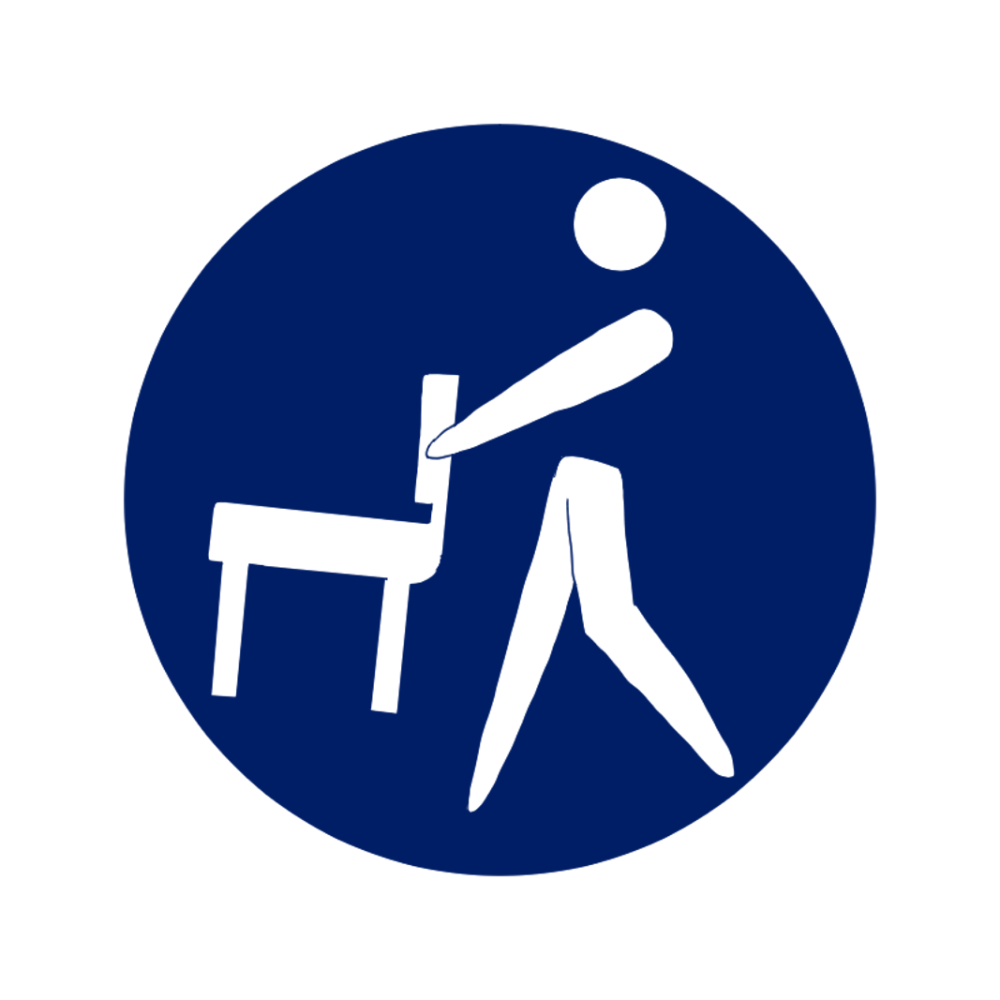
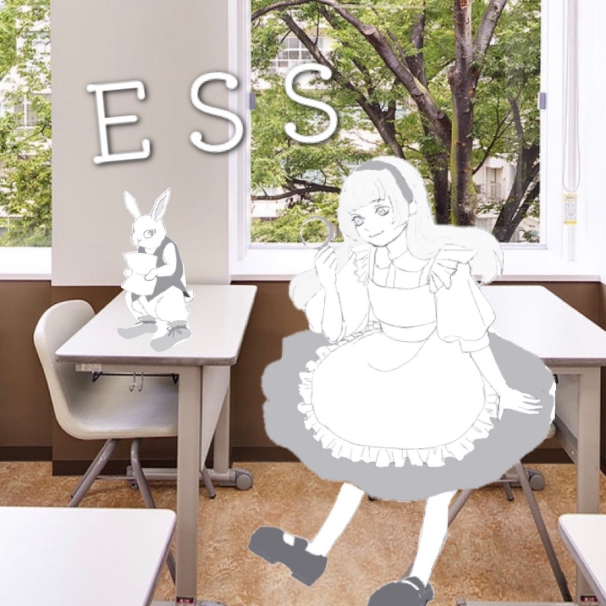
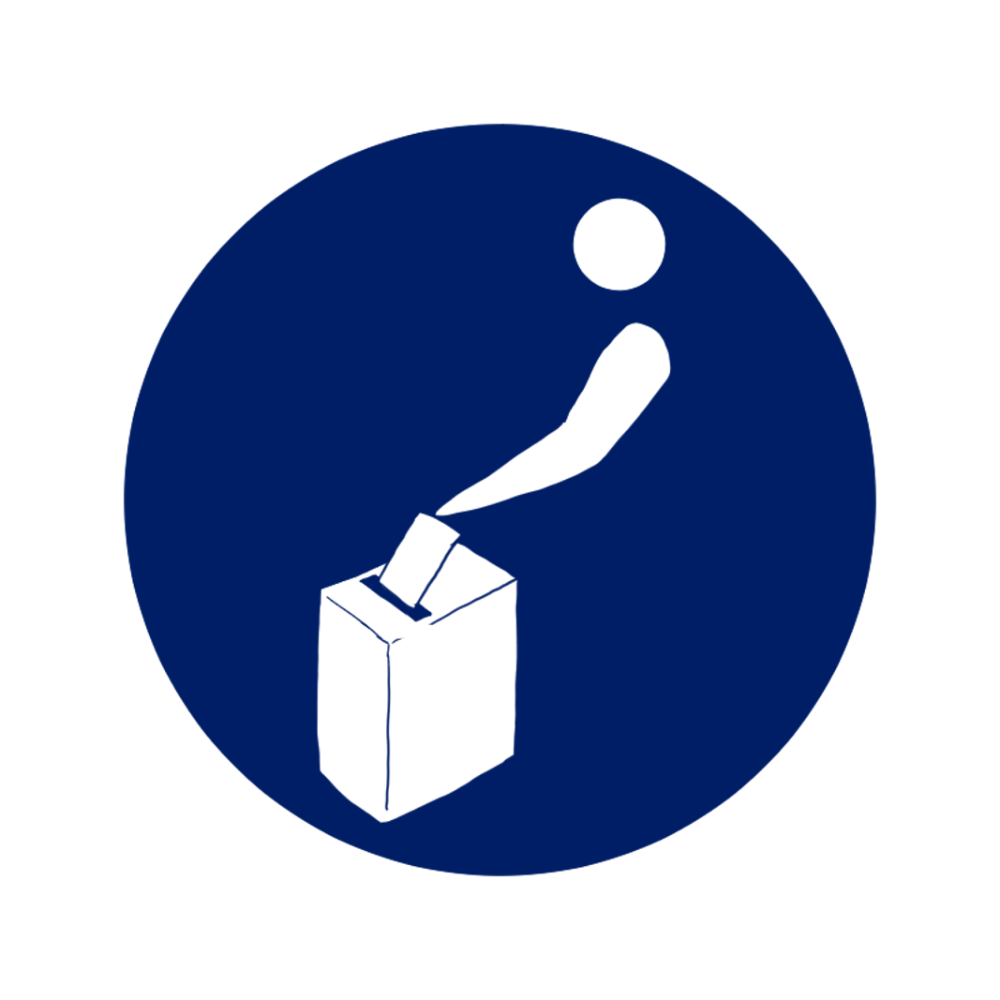

ホーム
テーマについて
パンフレット
タイムスケージュール
団体紹介
運営紹介
保護者用ページ
運営紹介
けやき祭の運営を行なっている組織です。
生徒会
-Student Council
生徒会本部は、全生徒で構成される最大の自治組織である生徒会の代表機関です。高校10名、中学8名の、会長、副会長、書記、会計で構成されており、普段は独立した組織として活動し、けやき祭の際は中高で協力して運営を行います。 生徒がより充実した学園生活を送れるように、生徒の代表として働くことが生徒会本部の最も重要な役割です。このけやき祭に向けても約1年前から協議を重ね、たくさんの方の力を借りながら、準備をして参りました。
演出部門
-Production department

演出部門ではWebサイトに載せる一部団体の映像作成、前夜祭・けやき祭当日ではアリーナの照明・音響・ライブ配信を担当しています。
装飾部門
-Decoration department
装飾部門では美術部が中心となって学校全体を装飾します。今年の装飾のテーマは「自然とモダン」です。糸などを使い例年とは違う装飾をしました。
広報部門
-Public Relations Department
広報部門では生徒が協力し、けやき祭特設Webサイトの運営や校内案内動画の撮影、およびけやき祭用パンフレットの作成を行いました。
同窓会
-Alumni Association
在校生と卒業生による相談会を行います！学園生活や進路、受験についてなど様々な質問にお答えします！

PTA
-Parent Teacher Association
来場者及び生徒へのミネラルウォーター配布、生徒会と連携し生徒へのけやき祭デザイングッズを作製します。
詳しく見る→
後援会
-Supporters' Association
後援会は、卒業生の父母の会です。
彩ゆたかな【けやき祭】に
安心・安全のお手伝いをいたします。

詳しく見る→
学級委員会
-Grade Committee
学級委員会は、玄関での受付業務を行い、ご来校くださる方々が安心して楽しめるよう、徹底した感染対策の元で、生徒代表として明るくご案内致します。
詳しく見る→
風紀委員会
-Discipline Committee

風紀委員会は、今年のけやき祭では校内巡回、落とし物管理、入退場者の管理を行なっています。普段は通学カバンや制服の自由化を進めたりしています。
詳しく見る→
美化委員会
-Beautification Committee

美化委員会は、校内の美化を行っています。けやき祭が開催できることに感謝し、多くの方に安心して来校して頂けるよう万全な感染対策に努めます。
詳しく見る→
保健委員会
-Health Committee

今回のけやき祭では美化委員会と協力し様々な感染予防に取り組んでいます。 感染予防には皆様のご協力が不可欠です。ご協力お願い申し上げます。
詳しく見る→
体育委員会
-Sports Committee

1年の中で1番活躍するのがスポーツフェスティバルで、幅広い役割を担っています！ そして、けやき祭ではアリーナ･サブアリーナの整備に尽力しています！
詳しく見る→
放送委員会
-Broadcasting Committee
放送委員会では様々な学校行事の放送や、毎日約15分のお昼の放送の仕事をしています。けやき祭では主に校内放送や団体の演出などをサポートしています。
詳しく見る→
図書委員会
-Book Committee
昨年に引き続き「オンラインビブリオバトル」を開催します。また、インフォメーションセンターを運営しています。

詳しく見る→
選挙管理委員会
-Behavior Management Committee

選挙管理委員会は通常、生徒会役員選挙の運営を中心とした活動、けやき祭では前夜祭の生徒の席決めを行っています。
詳しく見る→